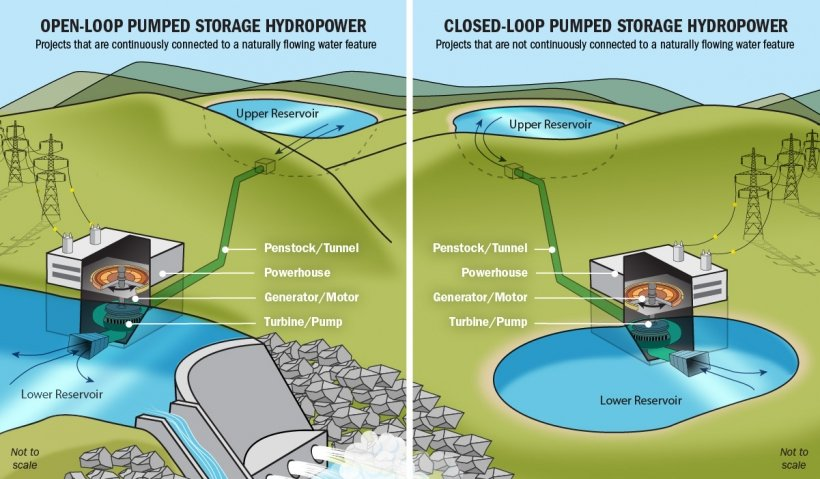
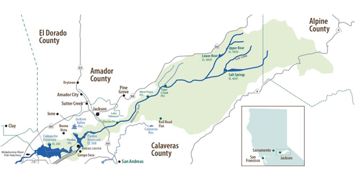

Mokelumne Project Notes
General Notes
- Global renewable generation capacity = 3064 GW (3 TW)
- hydropower capacity = 1360 GW (1.3 TW)
Notable News
- Mat 2023 - NYT article on the rapid rise of pumped hydro
- July 2023 - groups want to triple total renewable energy capacity to 11 TW by 2030
- Oct/Nov 2023 - World Hydropower Congress, Bali, Indonesia
- Nov/Dec 2023 - COP28, Dubai, UAE
Hydropower
For over 100 years, hydroelectric power made using gigantic dams has provided renewable energy but displaced communities and destroyed ecosystems. But now a renaissance in pumped hydropower is changing the game.
Pumped hydro
Water batteries for solar and wind power (world’s biggest battery)
- PSH is a type of clean, hydroelectric energy storage technology, energy storage is a critical source of grid system flexibility, and most stored energy is PSH
- absorbs surplus energy at times of low demand and releases it when demand is high
- World’s biggest battery: 94% of global utility-scale energy storage (Uría-Martínez et al. 2021)
- Supports ever-growing proportion of variable renewable energy
- As more wind and solar become available, PSH can integrate the indeterminacy and seasonality of variable renewable (can’t forecast the sun a wind a year out…)
- provide storage capacity to reduce curtailment during oversupply
- provide inertia to stabilize grids, frequency control, voltage regulation, storage and reserve power with rapid mode changes, and black-start capability
- long asset life, low-lifetime cost and independence from raw materials
How it works
Water is pumped from a lower reservoir to an upper reservoir in times of high electricity supply (sun for solar panel / wind for mills) and/or low demand. During times of low supply and/or high demand, water from the upper reservoir is released into the lower reservoir, generating electricity as it moves through a turbine.
- operates like a conventional hydropower plant, but it can reuse water over and over
- at times of low demand when electricity prices tend to be lower, water is pumped from a lower reservoir to an upper reservoir, and then released at times of high demand to drive a turbine and generate electricity

- energy storage capacity depends on the size of its two reservoirs
- amount of power generated is linked to the size of the turbine
- a facility with two reservoirs roughly the size of two Olympic swimming pools, and a 500 metre height difference between them, could provide a capacity of 3 megawatts (MW) and store up to 3.5 megawatt hours (MWh) of electricity.
Open- vs. closed-loop
- Open-loop: with either an upper or lower reservoir that is continuously connected to a naturally flowing water source such as a river
- Closed-loop: an ‘off-river’ site that produces power from water pumped to an upper reservoir without a significant natural inflow

Demand & trends
PSH was first used in Italy and Switzerland in the 1890s, by the US by 1930, and is now used worldwide. However, new PSH faces many challenges (licensing, remunerate services), so little development over the past 30 years, but that is changing.
The figure below shows that whilst there is a sizable pipeline under development / permitting, most PSH under construction is in East Asia, principally China.

Future Potential
- 165 GW installed capacity; ~9,000 GWh of electricity is currently stored (IHA 2022)
- U.S. = 42 plants, 22 GW capacity, 550 GWh of electricity stored
- Significant potential for scaling up global pumped hydro capacity, including from more than 600,000 identified off-river sites (Stocks et al. 2021)
- >100 projects in pipeline: pumped hydropower storage capacity is expected to increase by almost 50 per cent – to about 240 GW by 2030 (IHA 2018)
IHA’s Pumped Storage Tracking Tool maps the locations and vital statistics for existing and planned pumped storage projects. It is the most comprehensive online resource on the world’s ‘water batteries’.
Knowledge gaps
From the 2020 International Forum on Pumped Storage Hydropower (IFPHS):
- Furthering PSH potential: install at old mines, underground caverns, non-powered dams and conventional hydropower plants, as well as location agnostic underground PSH, off-river PSH and seawater PSH, represents vast untapped potential
- Retrofitting and upgrading PSH systems: latest technological advancements, such as the use of variable speed pump-turbines and hydraulic short circuit, can enhance the services provided by existing PSH
- Developing hybrid systems: coupling PSH with batteries, floating solar PV, heat storage and desalination can provide additional services with reduced costs and environmental impacts
Mokelumne Water Battery Project
Project description
By 2030, 60% of CA’s energy must come from renewable resources, and by 2045, 100%. But wind and solar are not available all the time. The GreenGen Storage Mokelumne Water Battery Project will reduce California’s reliance on fossil fuels by meeting the state’s energy demands with reliable renewable energy. It takes advantage of two existing hydroelectric reservoirs in CA’s Sierra foothills, so few environmental impacts. Without pumped hydro, CA will have to rely on fossil fuels to integrate variable renewables (in 2018, CA curtailed ~ 460,000 MWh, enough to power 80,000 households).
- planned 400 MW capacity (up to 1200 depending on design, needs, environment)
- 4,000 MWh of zero emission energy
- 2 reversible pump-turbines
- 8-10 hours of energy storage
- will move ~ 3,000 acre-feet of water back and forth

Benefits
- Provide carbon-free electricity, thereby reducing GHG emissions
- Meet the state’s energy and emissions goals
- Create hundreds of construction jobs and approximately ten permanent jobs
- Provide local economic stimulus throughout project development and operation
Environmental Impacts
“The project leaders have spent their careers working towards environmental causes and encouraging renewable energy. Project development will be guided by this deep commitment to respecting and protecting existing environments and resource use where possible, and to mitigating changes where needed. The project team pledges to work closely with environmental resource agencies and interested stakeholders to ensure that this commitment is met.”
- Already a stressed system (and CC will make it worse)
- Water temperature and downstream impacts (model will look at impacts)
- Using Lower Bear (fewer impacts to cultural/bio resources and no new roads)
- No dam raises (no new inundation)
- footprint is 53 acres, all FS land
- 90% of facilities are underground
- 3,000 acre-feet of water back and forth (impacts on shore line)
- Biological
- Sierra yellow-legged frog
- Foothills yellow-legged frog
- Mesocarnivor and birds (great grey owl): buffer areas
Progress to date
- July 2016 - GreenGen App for preliminary permit
- Dec 2017 - FERC-issued preliminary permit
- Spring 2022 - initial engineering report
- Fall 2021 - engineering/cultural/environmental team site visits
- April 2022 - Pre-Application Document (PAD)
- Jan 2023 - Proposed Study Plan
- Feb 2023 - FERC issued Study Plan Determination (SPD)
- confirmed all studies plus additions to Recreation and Enviro Justice Study
- Spring 2023 - water temp and hydrology models begin
- Summer 2023 - field studies (difficult with snow conditions)
Studies
WR-1 (Hydrologic and water temperature operations models)
- compare project operations to baseline conditions
Goal: Evaluate impacts and co-benefits
- operational changes to achieve low impacts and benefits
- size of tunnels
- reservoir fluctuation (2-12 ft, average ~ 3-4 ft); lowest during peak rec season
- footprint of reservoir (2 foot dam raise at lower Bear)
- footprint of powerhouse
- entry / exist point
- floatovoltaics
Relevant Groups
- Clean Energy Ministerial (CEM)
- high-level global forum to promote policies and programmes that advance clean energy technology, to share lessons learned and best practices, and to encourage the transition to a global clean energy economy
- Global Energy Monitor (GEM)
- develop and share information in support of the movement for clean energy
- many trackers, including the Hydropower tracker
- Global Renewables Alliance (GRA)
- International Hydropower Association (IHA)
- “The global voice for sustainable hydropower”
- 2023 World Hydropower Congress, Bali, Indonesia, 31 Oct - 2 Nov
- International Energy Agency (IEA)
- International Forum on PSH (IFPSH)
- government-led multi-stakeholder platform to shape and enhance the role of pumped storage hydropower in future power systems
- created Nov 2020 chaired by US DOE
- International Renewable Energy Agency (IRENA)
- intergovernmental organization mandated to facilitate cooperation, advance knowledge, and promote the adoption and sustainable use of renewable energy
- United Nations (UN)
- “Peace, dignity, and equality on a healthy planet”
- intergovernmental organization whose stated purposes are to maintain international peace and security, develop friendly relations among nations, achieve international cooperation, and serve as a center for harmonizing the actions of nations
- COP28 - 2023 Conference of the Parties to the UN Framework Convention on Climate Change, Dubai, UAE
- US DOE Water Power Technologies Office (WPTO)
- does R&D to understand and assess value of potential benefits of existing and prospective PSH (e.g., the HydroWIRES Initiative for grid reliability, resilience, and integration).
Glossary
Curtailment: when the sun shines and the wind blows more than is demanded, a system operator deliberately reduces the supply of electricity in order to balance the grid. Where storage does not exist, this means that renewable electricity is wasted and not stored for potential use in future
Evaporation suppressors: small plastic objects floated on a reservoir to reduce wind speeds and evaporation ratesPSH: pumped storage hydropower (US)
Head:
Load: electricity demand
PHES: pumped hydro energy storage (AUS)
Storage power capacity:
Storage energy volume:
Variable energy: power output rises and falls in response to, e.g., sun and wind